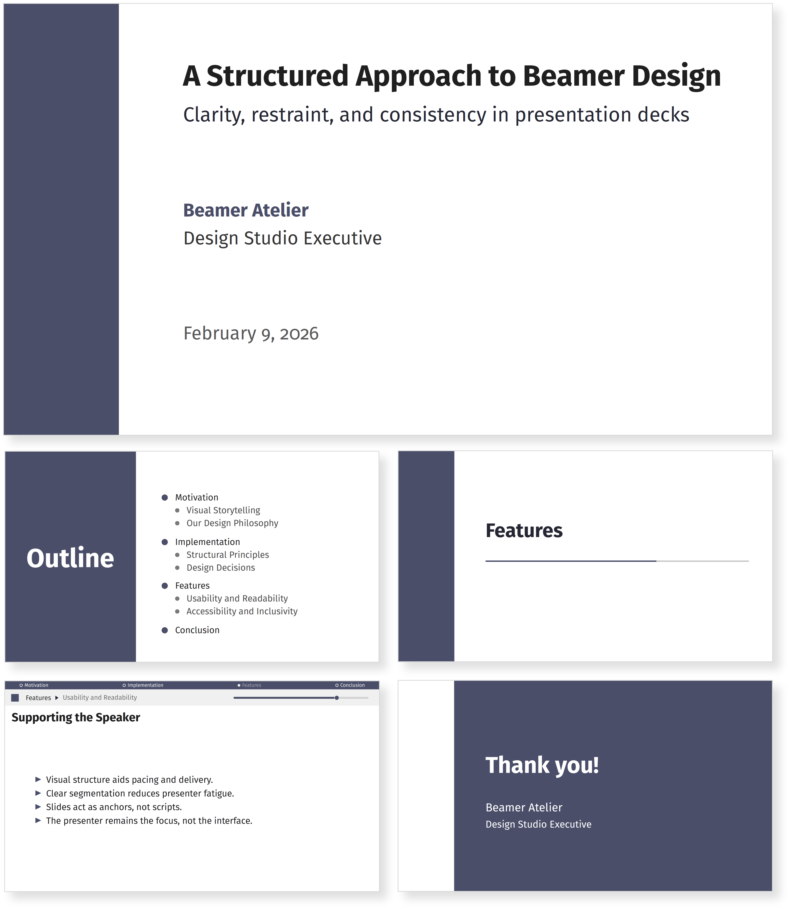
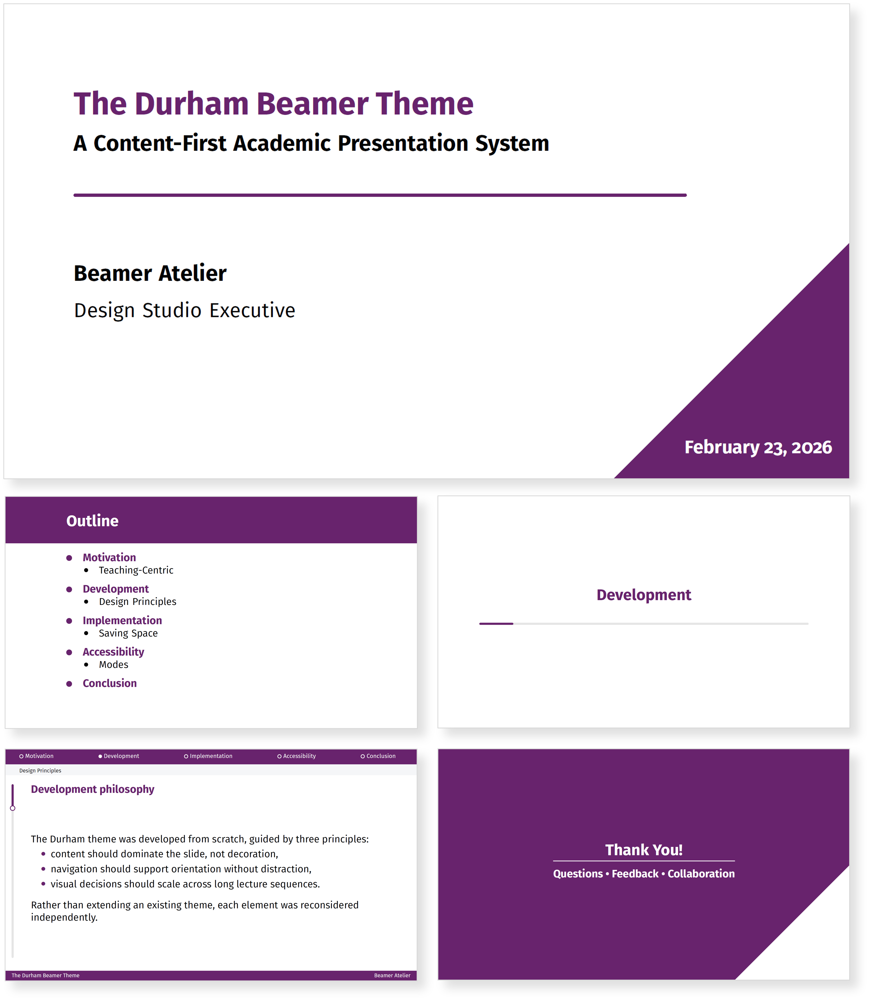
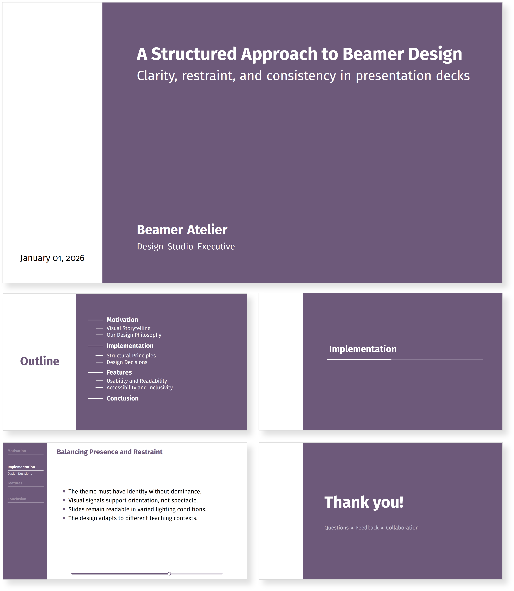
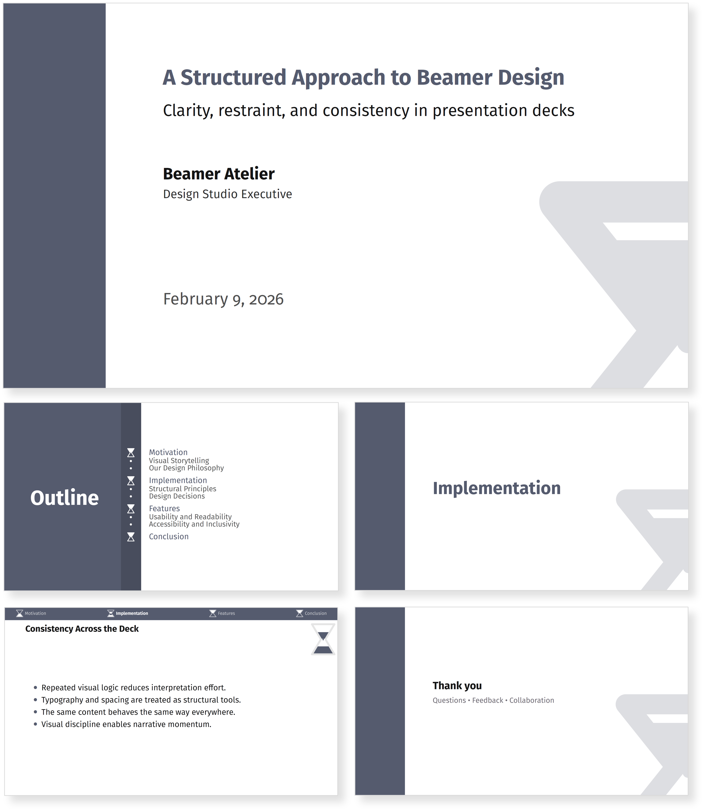
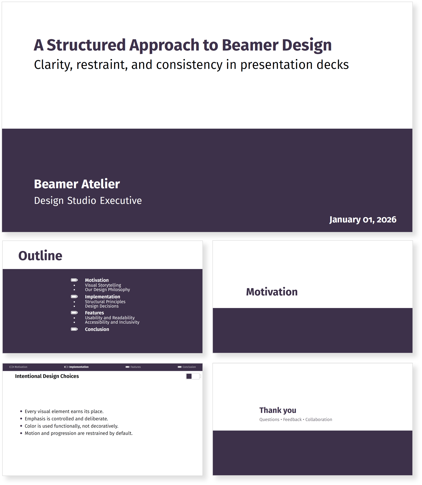
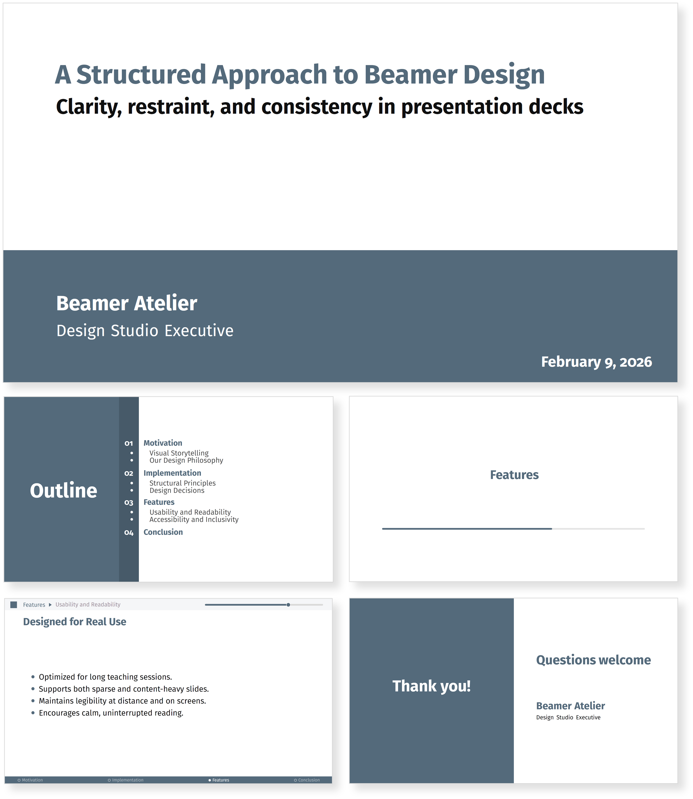

Our themes
Snowdrop
Snowdrop is a premium LaTeX Beamer theme designed for academic and professional presentations. Includes title slide, structured outline, automatic section pages, navigation headline with progress, thank-you slide, and a references environment. Delivered as a downloadable digital package (.sty + documentation) and a license agreement.
Download DemoBuy Snowdrop — £19
Durham
A formal academic theme with strong sectional identity and institutional gravitas, suited for finance, economics, and executive education. Open-source and available on CTAN.
Download DemoGet on CTAN
Minimalistic

A content-first theme that removes visual noise and foregrounds typographic hierarchy for uninterrupted reading.
Download DemoAvailable Soon
Pathway
A progression-driven theme built around directional structure and steady forward movement. Pathway reinforces sequential reasoning and narrative flow, making it ideal for long-form lectures, methodological exposition, and structured academic presentations.
Download DemoAvailable Soon
Hourglass
A narrative-driven theme built around temporal progression, ideal for methodological, conceptual, and process-oriented lectures.
Download DemoAvailable Soon
Donut

A progress-aware theme using circular navigation cues to support audience orientation without visual dominance.
Download DemoAvailable Soon
Battery
A theme that visualises pacing and progression, best suited for workshops, short courses, and modular teaching.
Download DemoAvailable Soon
Futurista
A cool-toned experimental theme emphasising composure and horizontal structure for modern technical presentations.
Download DemoAvailable Soon